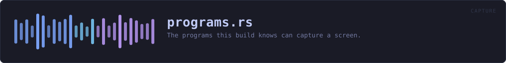

crates/veilvoice-capture/src/programs.rs
veilvoice-capture · 385 lines · read the source
The programs this build knows can capture a screen.
A list, and therefore incomplete
This is a table of names. Anything not in it is not reported, and the table will never be complete: new recorders appear, people rename executables, and a program written specifically to capture a screen quietly would simply not be called obs64.exe. crate::SCOPE says so, and no front end may present an empty report as "nothing is recording".
What it is genuinely good for is the ordinary case, which is also the common one: you have OBS open, VeilVoice notices, and you either wanted that or you did not.
Capable of capturing is not the same as capturing
Zoom being open does not mean Zoom is sharing your screen. Discord running does not mean anybody is watching it. This crate reports what is running, and the distinction is carried in every string it produces, because the alternative is a privacy tool that cries wolf every time somebody opens a chat application.
Telling the difference needs the compositor to say who is holding a capture session, and reaching that is FFI on every platform here. See crate for what that costs and why it is not paid.
In plain words
A list of programs that can record a screen, with what each one is and whether recording is its purpose or merely something it can do.
The difference matters. A screen recorder being open is worth telling you about. A chat program being open is worth much less, because it can share a screen and almost never is, and treating the two the same is how a warning becomes noise that everybody learns to ignore.
This is a list of names, not a list of threats. Almost everything on it is software somebody installed on purpose.
WHAT THIS FILE CONTAINS
385 lines defining 3 functions (3 public), 2 types and 1 constant. Everything below is read out of the source, so it cannot disagree with the code.
The types it owns.
struct Programline 43 — One program known to be able to capture a screen.enum Purposeline 63 — Why a program is in the table.
What happens when it runs. These are the ways in: public, and nothing else in this file calls them, so they are what an outside caller reaches first.
Purpose::phrasingline 76 — The wording a front end should use for this kind of program.matchingline 218 — Find the program a process name belongs to, if this build knows it.by_keyline 237 — Find a program by its Program::key.
WHAT CALLS WHAT
The functions this file defines, and the calls between them. An edge means the callee's name appears, called, inside the caller's body — a syntactic reading, not a type-resolved one.
The same graph as Mermaid source
%%{init: {"theme":"base","themeVariables":{"background":"#1a1b26","primaryColor":"#1f2335","primaryTextColor":"#c0caf5","primaryBorderColor":"#7aa2f7","secondaryColor":"#16161e","tertiaryColor":"#16161e","lineColor":"#737aa2","textColor":"#c0caf5","mainBkg":"#1f2335","nodeBorder":"#7aa2f7","clusterBkg":"#16161e","clusterBorder":"#2f3549","fontFamily":"ui-monospace, SFMono-Regular, Consolas, monospace","fontSize":"14px"}}}%%
flowchart TD
n_phrasing(["Purpose::phrasing<br/>line 76"])
n_matching(["matching<br/>line 218"])
n_by_key(["by_key<br/>line 237"])
click n_phrasing href "https://github.com/tilas01/veilvoice/blob/main/crates/veilvoice-capture/src/programs.rs#L76" "open the source"
click n_matching href "https://github.com/tilas01/veilvoice/blob/main/crates/veilvoice-capture/src/programs.rs#L218" "open the source"
click n_by_key href "https://github.com/tilas01/veilvoice/blob/main/crates/veilvoice-capture/src/programs.rs#L237" "open the source"
classDef entry fill:#1f2335,stroke:#7aa2f7,color:#c0caf5
class n_phrasing,n_matching,n_by_key entryThis site loads no third-party script, so it cannot run Mermaid; the diagram above is the same nodes and edges drawn by the generator instead. GitHub renders the source below directly.
ITEMS
| Item | Line | Documentation |
|---|---|---|
Program pub struct | 43 | One program known to be able to capture a screen. |
Purpose pub enum | 63 | Why a program is in the table. |
Purpose::phrasing pub fn | 76 | The wording a front end should use for this kind of program. |
ALL pub const | 91 | Every program in the table. |
matching pub fn | 218 | Find the program a process name belongs to, if this build knows it. |
by_key pub fn | 237 | Find a program by its Program::key. |